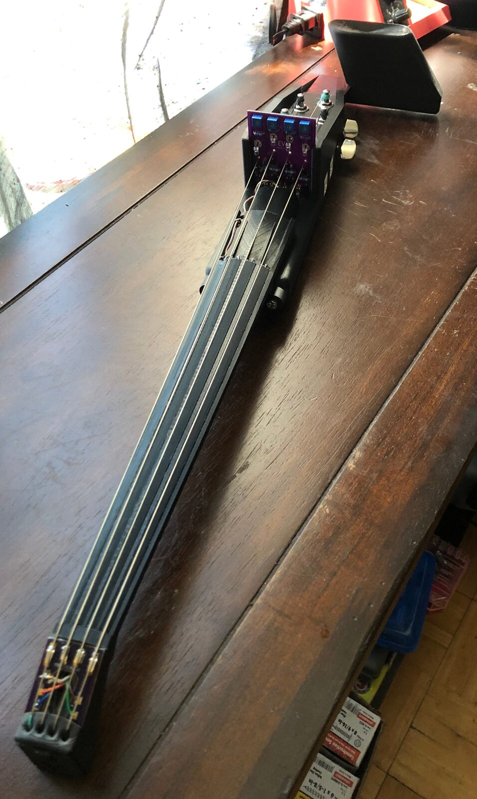
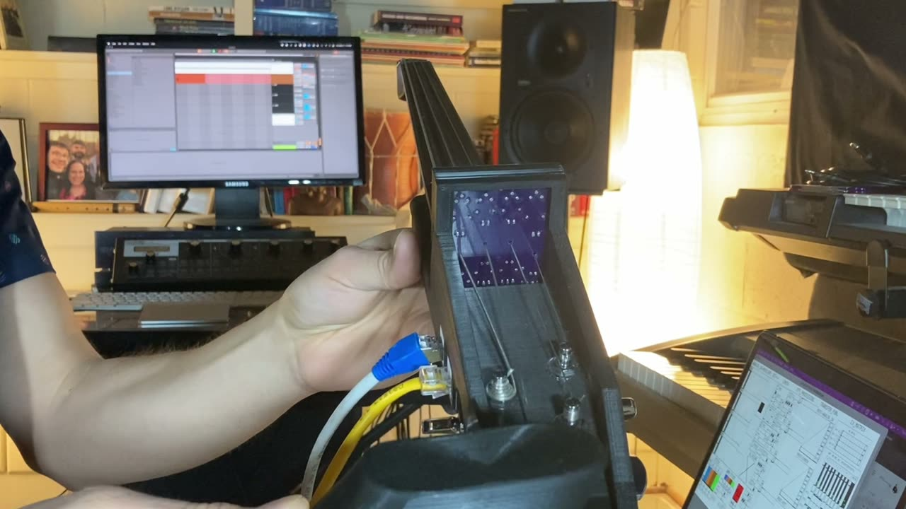

The EV: A New Digital/Acoustic Hybrid Stringed Synthesizer
The EV: A New Digital/Acoustic Hybrid Stringed Synthesizer
Brian Lindgren — University of Virginia, United States
PubPub Link
https://nime.pubpub.org/pub/jar93gnp/draft?access=agaxzke5
Abstract
The EV is a new digital/acoustic hybrid stringed-instrument synthesizer. The instrument’s FFT convolution algorithms combined with the unique and expressive synthesizer create a gritty and textured realism. Using a novel pitch-tracking technology the instrument achieves both high accuracy and low latency; in this way it overcomes the hurdles that have historically plagued pitch-tracking or ‘MIDI’ stringed-instruments. Most importantly, the EV is reliable, expressive, and enjoyable-to-play. The most unique feature of the EV is its sound. While the pitch-tracking technology allows for a responsive and accurate playing experience (which cannot be overvalued), the FFT convolution unlocks new dimensions of sonic possibility and a uniquely responsive electronic instrument. The parametric customizability of the synthesizers, transfer functions, and FFT engines (not to mention the timbral-responsive nature of the FFT convolution algorithms) allows for a responsive and far-reaching sonic palette. Most synthesizers utilize an interface for pitch input that forces the player to adhere to a ‘Western’ twelve-tone scale system, for example, a keyboard. As the EV is a fretless stringed-instrument, it allows for the creation of synthesized music of any particular tuning system. In this way it suggests the creation of music beyond the Western canon, suggesting myriad musical possibilities.
Requirements
The EV demonstration in a virtual environment will utilize Zoom’s ‘remote control’ feature. This will allow the conference participants to play with the EV’s software GUI while the demonstrator is playing the instrument, thereby allowing the participants to experiment with the instrument’s sonic capabilities.
Program Description
The demonstration will begin by showcasing some of the features and sounds of the EV. This will be followed by a technical overview which will include conceptual outlines, a signal flow description, noteworthy construction approaches and considerations, current challenges, and plans for the EV’s future development. Next, there will be an opportunity for questions and answers. Lastly, the EV will be made available for participant interaction via the Zoom ‘remote control’ feature.
Media


Demo Video:

▶Acknowledgements
The author would like to thank his mentors and peers at the Brooklyn College Sonic Arts and the University of Virginia Music Composition and Computer Technologies programs who have encouraged him along his journey with the EV.